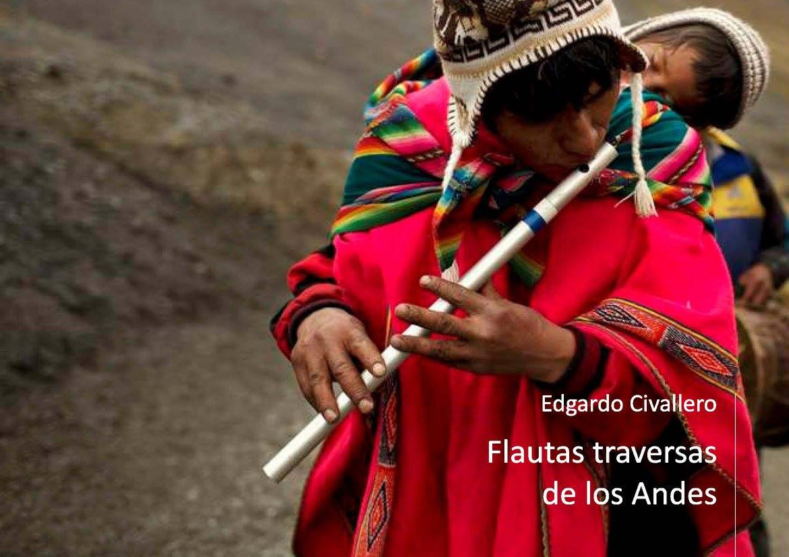

Flautas traversas de los Andes
Inicio > Libros digitales sobre música > Flautas traversas de los Andes
Cómo citar este trabajo: Civallero, Edgardo (2025). Flautas traversas de los Andes. Edición de archivo. Bogotá: El Zorro de Abajo Editora.
Descargar en PDF.
Este libro ofrece un panorama exhaustivo de las flautas traversas tradicionales en la cordillera andina, desde la Patagonia hasta Colombia. A partir de una combinación de investigación documental, arqueológica y etnográfica, se muestra que estos aerófonos, lejos de ser simples herencias coloniales, tienen raíces más antiguas y profundas en el continente sudamericano, adaptadas y resignificadas en cada región por las comunidades locales.
El texto se abre con una introducción metodológica y taxonómica, donde se precisa la clasificación para las flautas traversas andinas. Se recuerda además que, durante mucho tiempo, se creyó que las flautas traversas del área eran de origen europeo —descendientes del pífano militar del siglo XVI— aunque la arqueología de San Pedro de Atacama reveló la existencia de al menos un ejemplar precolombino de madera, lo que obliga a reconsiderar la cronología y las rutas de transmisión.
En el extremo sur andino, el estudio se inicia con el pueblo Mapuche. En Argentina, el instrumento aparece como kina o kiná, hecho de caña o cicuta, con entre cuatro y seis orificios, asociado a contextos domésticos o rituales menores. En el sur de Chile se denomina pingkullwe y se fabrica con quila o colihue, a veces embadurnado con grasa de gallina. Su sonoridad, nasal y suave, se asocia al universo femenino y medicinal de las machi, y mantiene cierta presencia actual. En el norte chileno y noroeste argentino, en cambio, las traversas desaparecen casi por completo, excepto entre los Ava o Chiriguanos del Chaco, quienes conservan una "flauta cruzada" llamada temïmbï ïe pïasa, heredera de un repertorio que articula influencias andinas y guaraníes.
En Bolivia, las traversas reciben los nombres de pífano, pito o phalahuata (voz aymara derivada de "flauta"). Generalmente de caña, con seis orificios, se ejecutan en conjuntos junto a bombos wank'ara o tambores. Se utilizan en danzas tradicionales como puli puli, machu machu, lecos, sembrador, auqui auqui y chunchus, y también en comparsas de morenada. En la provincia de Bautista Saavedra (La Paz), los conjuntos de pifanada y pifaneada tocan pares de flautas de diferentes longitudes afinadas en intervalos complementarios. En Pelechuco y en los yungas, el pífano acompañó antiguas danzas hoy desaparecidas, como la del loco palla-palla. Estas formaciones, que alternan el soplo seco con percusiones profundas, se emparentan con los grandes pinkillos y rollanos del altiplano, integrando el paisaje sonoro ritual del calendario agrícola.
En el Perú, la variedad es mayor. Las traversas, denominadas pitos, pífanos, flautas o quenas traveseras, se distribuyen por todo el territorio andino. En Pomabamba (Áncash) y en el Cusco se construyen de caña con cinco o seis orificios y se ejecutan por parejas. En Puno, las phalahuitas aymaras se tocan también en dueto, afinadas en quintas paralelas, acompañadas de tambor. En Cajamarca, la travesera es de carrizo o saúco, mientras que en Sandia y Amazonas se registran ejemplares con orificios inferiores adicionales, de clara influencia amazónica. Se describen además flautas semi-cerradas como el chuncho pito de Sandia y el pinkullo de Ayacucho y Huánuco, instrumentos híbridos que oscilan entre la quena y la traversa. En Lambayeque, un caso excepcional es el kinran pinkullu, tocado exclusivamente por mujeres, fenómeno singular dentro de la organología andina.
Las agrupaciones peruanas de traversas —bandas de carrizos, bandas de guerra o comparsas rituales— conforman un universo sonoro complejo. En Áncash y La Libertad acompañan danzas locales; en Cusco, formaron parte de las tropas populares durante la Guerra del Pacífico y todavía acompañan fiestas emblemáticas como la k'achampa o los qhapaq ch'unchu de Paucartambo. Se subraya la resistencia cultural de estas bandas frente a la sustitución por conjuntos de bronces, subrayando su papel como archivos vivos de identidad local.
En Ecuador, las traversas son llamadas flautas de carrizo, flautas de zuro o pífanos, y se interpretan de forma solista, en pareja o en tríos. Están presentes en las festividades de San Juan, Corpus Christi y Semana Santa, especialmente en Imbabura, Pichincha y Cotopaxi. Los pares de flautas "macho" y "hembra" ejecutan melodías paralelas no temperadas, a menudo acompañadas de redoblantes. Las tundas o yacuchimbas de Cayambe son utilizadas en procesiones y ritos agrícolas, y clasificadas en tres tamaños que corresponden a distintos registros. Las más reconocidas, sin embargo, son las gaitas de Otavalo e Imbabura, hechas de caña con un nudo central (muku), donde las flautas dialogan en pares como entidades vivas: la ñañu aguda (femenina), la raku grave (masculina) y la pariku intermedia. Las gaitas, consideradas seres con sed que se "alimentan" de chicha, se tocan en ceremonias de Inti Raymi, acompañadas por bocinas de cuerno y caracola, zapateo y canto, como expresión ritual del equilibrio cósmico entre masculino y femenino. En la misma región, la kucha —una flauta más larga y aguda— representa la voz del chuzalunku, espíritu masculino de los cerros, y se toca en soledad, en un repertorio reducido pero profundamente simbólico.
Finalmente, el libro culmina en Colombia, donde las flautas traversas constituyen el corazón de las célebres chirimías y bandas de flautas. Estas agrupaciones, integradas por flautas primera y segundas junto con percusión variada —tambora, caja, maraca, charrasca y triángulo— interpretan bambucos, sanjuanitos y marchas. Se describen las variantes regionales entre los Yanakuna del Macizo colombiano, los Nasa o Páez de Tierradentro, los Misak o Guambiano, y los Embera-Chamí de Riosucio, cada uno con su propio repertorio ceremonial. En Popayán y el Cauca, las chirimías urbanas mantienen la estructura dual de flauta prima y segundas, reforzada por percusión múltiple, mientras que en Nariño, las "bandas de yegua" incluyen la quijada de caballo como idiófono resonante. Incluso en el Chocó, comunidades afrodescendientes han adoptado el formato andino de chirimía, adaptando los repertorios a su propio contexto sonoro.
El cierre del libro reafirma la idea central de que las flautas traversas andinas no son simples derivaciones del pífano europeo, sino el resultado de un prolongado mestizaje acústico, técnico y simbólico. A lo largo de la cordillera, estos instrumentos encarnan distintas formas de memoria y de resistencia: desde el soplo ritual Mapuche hasta las polifonías colectivas de los pueblos Quichua y Aymara, pasando por las bandas campesinas de Colombia. Este trabajo se convierte así en una cartografía del viento andino, donde cada tubo lateral encarna una voz ancestral que atraviesa la historia con la persistencia del aire.